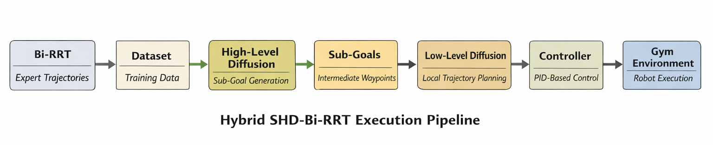
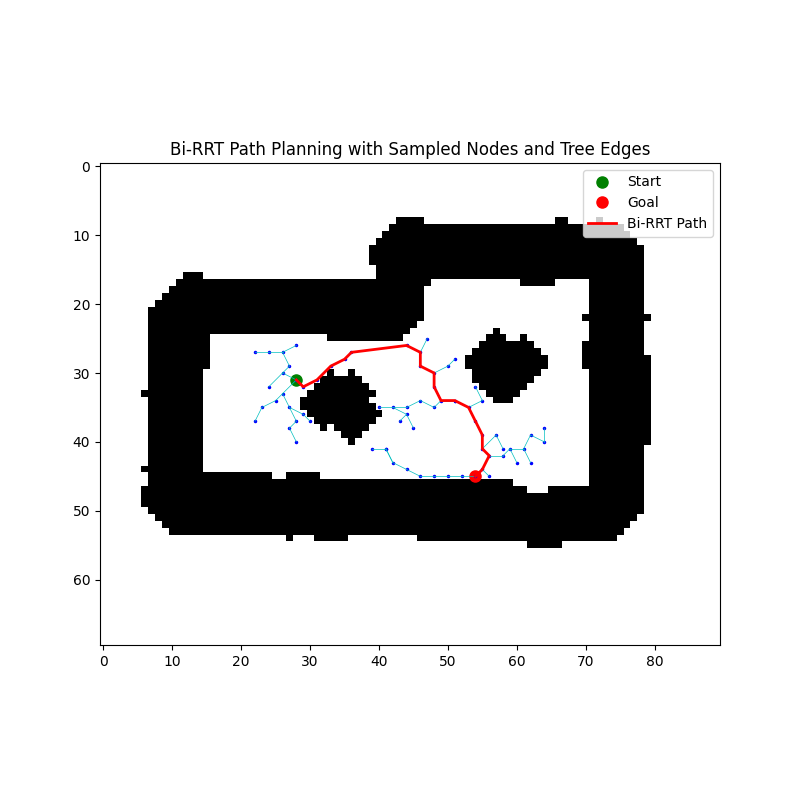
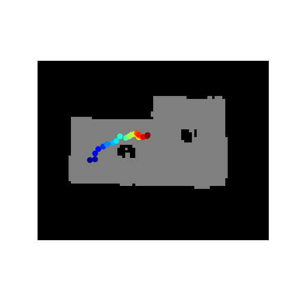

Trajectory Planning in Mobile Robots Using Diffusion Probabilistic Models
Teaching a TurtleBot to plan its path with a diffusion model instead of a classical planner.
The background: Classical planners like RRT and BiRRT search for a path step by step. For my Master's thesis in Automation and Robotics at TU Dortmund, I wanted to know whether a diffusion model, the same family of model behind image generation, could learn to "denoise" a rough path into a smooth, collision-aware trajectory instead.
The build: I built a ROS2 SLAM map of a TurtleBot environment, generated expert paths on it with my own Bi-RRT planner, and stored them as a D4RL-style dataset. On that data I trained a two-level Simple Hierarchical Diffusion model: a high-level model that proposes sub-goals and a low-level model that turns them into short-horizon motion. Both were trained for 2 million steps on a single RTX 3060.
The evaluation: I ran the planner in a custom Gym environment with differential-drive dynamics and collision checking, over 500 start–goal pairs, and compared two ways of executing it: the low-level model's raw velocity commands, and PID tracking of its predicted waypoints.
The approach: Rather than replacing classical motion planning outright, the thesis combines generative modeling with it, using the diffusion model to improve path feasibility and robustness on top of the classical foundation.
The stack: Python, PyTorch, ROS2 Humble (SLAM), Gym, D4RL-style datasets, Bi-RRT.
The grade: 1.3 on the German university grading scale, where 1.0 is the best possible grade and 4.0 is the minimum passing grade, so lower numbers are better. 1.3 corresponds to sehr gut (very good).
The results:
| 500 evaluation episodes | Raw diffusion actions | PID-tracked |
|---|---|---|
| Goal reached | 119 / 500 | 159 / 500 |
| Collisions | 311 / 500 | 144 / 500 |
| Mean jerk (m/s³) | 0.1132 | 0.1048 |
For reference, the Bi-RRT expert paths had a mean jerk of 0.1348 m/s³. Lower jerk means smoother motion.
Key finding: PID-tracked diffusion trajectories were 22% smoother than the Bi-RRT expert paths, and closed-loop tracking cut collisions by more than half (311 → 144). The trade-off is speed: the safer PID mode moves more slowly, so some long episodes time out before reaching the goal. Diffusion captures smooth local motion well, but closed-loop control is essential.
Limitations and next steps: Evaluation used one main SLAM map with static obstacles. Next steps are structurally diverse maps, replacing PID with MPC, LiDAR input for dynamic obstacles, and real-robot deployment.
What I learned: How much of "good navigation" is actually about the shape of your training distribution, not just the model architecture. This project set the direction for everything I've worked on since.


